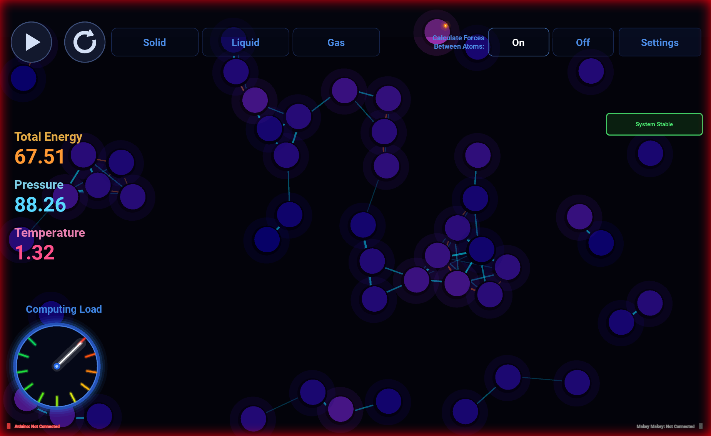
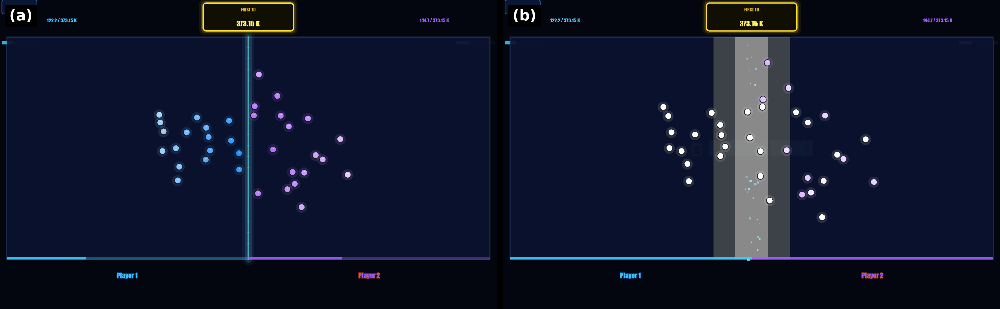
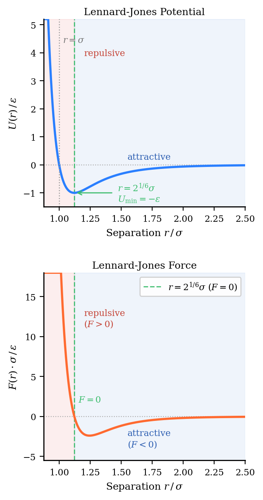
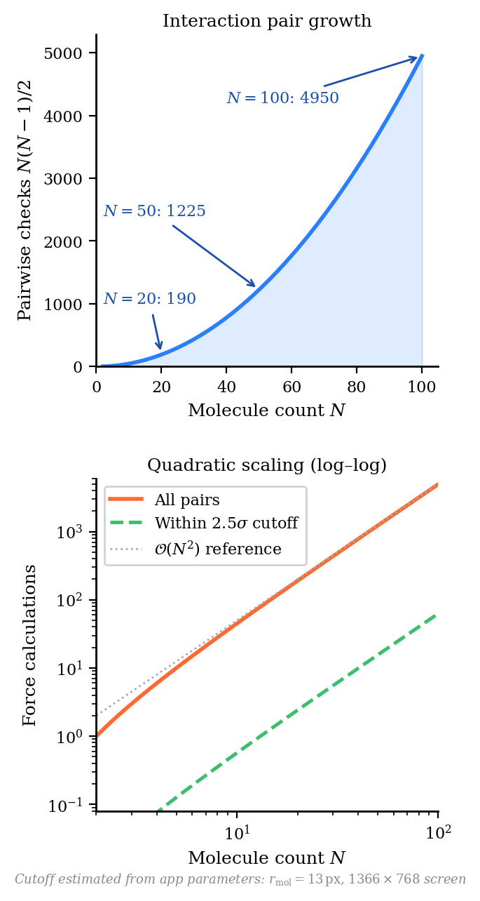
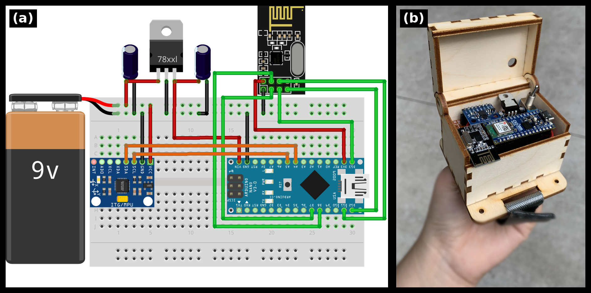

1The University of Texas at Austin 2Texas Advanced Computing Center
Molecular dynamics (MD) simulations play a central role in modern chemistry, biology, and materials science, yet the computational processes underlying these simulations remain largely invisible to students and the public. Existing educational molecular dynamics tools are primarily designed for classroom or individual desktop use and rarely support collaborative public engagement or illustrate the computational principles behind simulation. We present MD-Kivy, an open-source educational visualization designed for science centers and outreach environments that enables visitors to explore both molecular behavior and the computational principles underlying molecular dynamics through direct interaction.
MD-Kivy employs a Lennard-Jones particle simulation that emphasizes conceptual understanding rather than atomistic accuracy. Users manipulate simulation parameters to investigate how intermolecular forces influence particle motion and emergent collective behavior in real time. Color-mapped molecular velocities and a live computational workload display help users connect microscopic dynamics, emergent macroscopic behavior, and the computational scaling of pairwise force calculations. To encourage collaborative exploration, the system also includes a multiplayer mode in which groups of participants compete on opposite sides of a shared screen while optional tangible controllers map physical actions to molecular motion. MD-Kivy demonstrates a design approach for public educational visualization that integrates molecular science, computational thinking, and collaborative learning within a single exhibit experience.
The simulation core integrates motion with Velocity-Verlet (or first-order Euler, for contrast), computes vectorised Lennard-Jones forces with NumPy, and resolves collisions through a spatial cell-list. Solid, liquid, and gas presets initialize hexagonal close-packed lattices or free-flying ensembles, and a gentle Berendsen thermostat keeps lattices stable. Every frame publishes energy, temperature, and pressure to the interface.

Tap to spawn molecules, drag sliders for gravity, ε, σ, timestep, and speed, and toggle force visualization to watch the Lennard-Jones potential at work.
Two players race to heat their side of the arena to 373.15 K. The fastest time wins and feeds a persistent leaderboard - ideal for outreach events and classroom competitions.
Makey Makey boards act as per-player controllers, and an Arduino accelerometer literally shakes energy into the system over USB or an ESP-NOW Wi-Fi bridge.
A stability badge warns when the integrator choice, timestep, or molecule count threatens energy conservation, linking visual behavior to numerical methods.

Pairwise interactions follow the Lennard-Jones 12-6 potential with a 2.5σ cutoff. The force curve below shows the repulsive wall, the equilibrium minimum at r = 21/6σ, and the attractive tail that drives condensation.


The optional hardware layer uses an Arduino with an MPU6050 accelerometer (wired USB serial, or wireless via two ESP boards bridged with ESP-NOW) and one or two Makey Makey boards for touch input. Sketches, wiring notes, and step-by-step setup guides live in the hardware/ folder of the repository.

@misc{brund2026mdkivy,
title = {MD-Kivy: An Interactive Educational Visualization for Exploring
Molecular Dynamics},
author = {Brund, Anastasiia and Galindo Hernandez, Jared and Song, Iris and Das, Ayon Saneel and Jansen, Craig and Bowen, Anne},
year = {2026},
url = {https://github.com/AnastasiiaBerezovska/MD-Kivy}
}
Developed at The University of Texas at Austin with support from the Texas Advanced Computing Center.